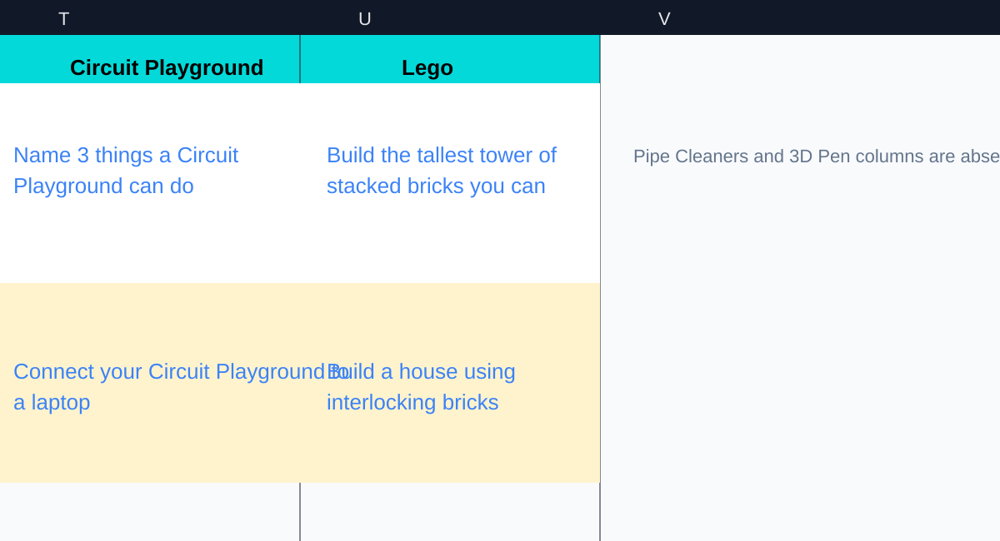
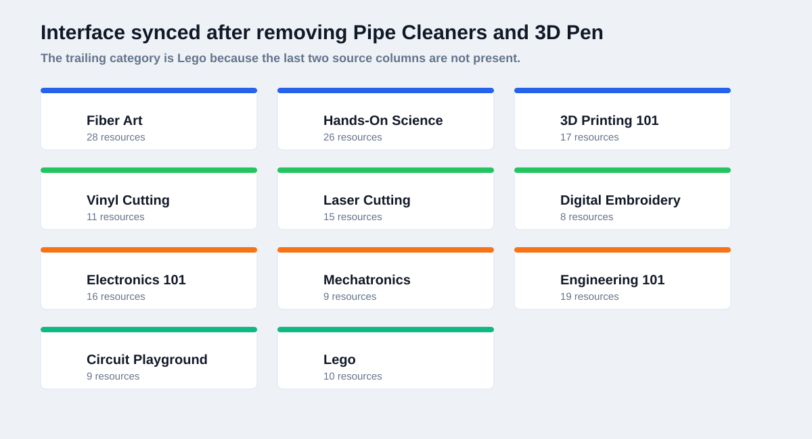
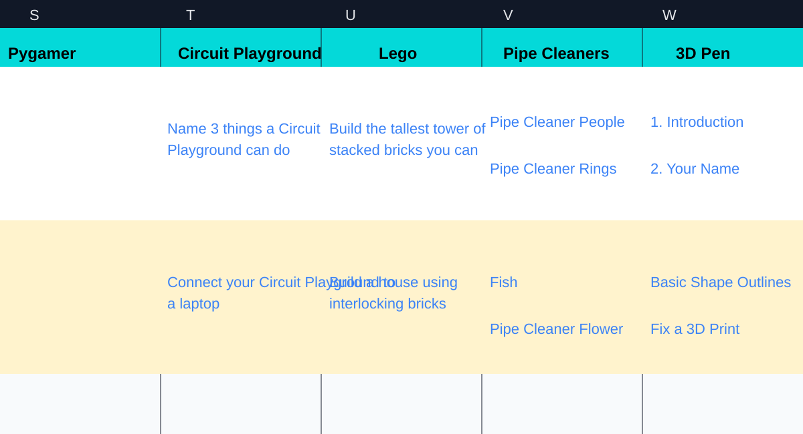
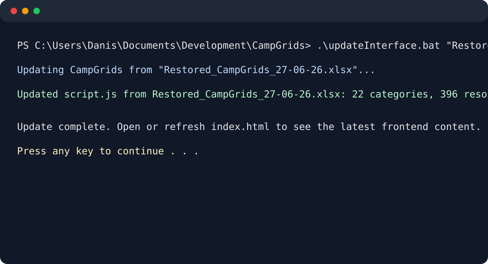
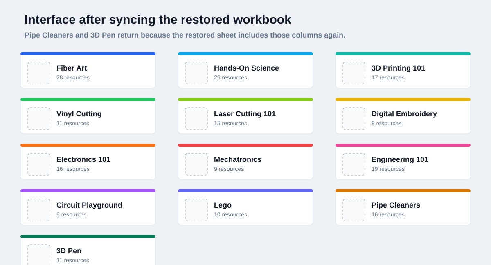

What is happening
The interface follows the workbook.
Each project category starts as a column in the spreadsheet. If a column is removed, that category is left out of the generated site. If the column is added back and the updater runs again, the card returns with its belts, links, resource labels, and counts.

Step 1
The spreadsheet changes first
Here, the Pipe Cleaners and 3D Pen columns have been removed from the workbook. Since the generator reads the sheet from left to right, Lego is now the last project category available for the site to import.

Step 2
The site reflects that missing data
After syncing this edited workbook, the interface does not show Pipe Cleaners or 3D Pen. Nothing was manually deleted from the HTML. Those cards are gone because their source columns were not in the spreadsheet that was imported.

Step 3
The missing columns are added back
In the restored workbook, Pipe Cleaners and 3D Pen are back at the end of the sheet. The spreadsheet structure is standardized again, so the updater has those categories available to rebuild.

Step 4
The batch file runs the sync
The command sends the restored workbook into updateInterface.bat. The batch file checks that a spreadsheet path was provided, then calls generateCampgrids.py with that file so the frontend data can be rebuilt.

Step 5
The refreshed site matches the restored workbook
Once the sync finishes, the interface has the full category list again. Pipe Cleaners and 3D Pen reappear because the generated campData now includes them, along with the imported belts, links, and 396 total resources.
Script logic
What runs when the workbook is synced
1. Use the batch file
updateInterface.bat is the command-line entry point. It requires an Excel file path, confirms the file exists, and then passes that exact workbook to the Python generator.
2. Read the workbook internals
generateCampgrids.py opens the .xlsx file and reads the worksheet text, shared strings, and hyperlink relationship data. That is how it gets both the visible project names and the links behind them.
3. Build the site data
The script turns spreadsheet columns into categories, column A belt labels into belt sections, numbered rows into parts, matching instruction/video pairs into series, and every non-video item into a resource.
4. Replace and render
The generator rewrites only the generated campData block in script.js. The browser then uses that data to draw the category cards, belt dropdowns, series sections, and resource/video rows.